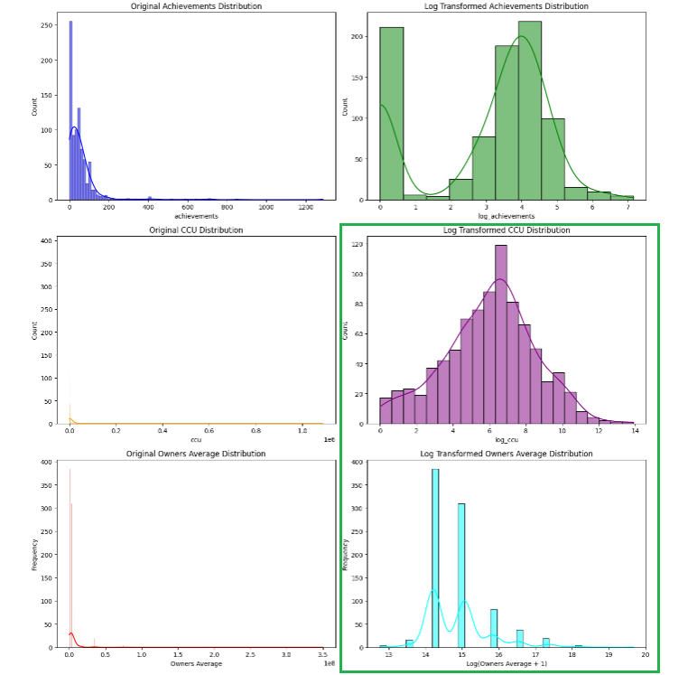
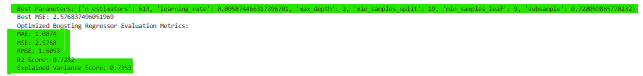

Price prediction is one of the deceptive problems in machine learning. It sounds simple — you have features, you have a target, you fit a regression — but real market data brings a set of pathologies that will quietly destroy a naive model. The target variable is heavily right-skewed because most software sells cheap and a tiny fraction sells expensive. Feature columns arrive with wildly different scales. Categorical metadata explodes into high-dimensional sparsity the moment you one-hot-encode it. And any extreme outlier in the target will dominate the loss function, dragging the entire model toward fitting that single data point instead of learning the general pattern.
This project set out to build a predictive pipeline that treated those pathologies as first-class engineering problems rather than as cleanup work to handle later. The result is an end-to-end regression system trained on the Steam 2023 dataset combined with multi-platform telemetry — spanning data engineering, feature engineering, distribution transformations, multi-model ensemble evaluation, and automated hyperparameter optimization to select a champion production model.
The pipeline uses public market metadata only. No private financial transaction tokens, developer payment credentials, or company security layers were processed at any stage. The dataset consists of publicly-listed game attributes: supported languages, platform availability, achievement counts, concurrent user figures, and listed prices — the same information visible to any user browsing the storefront.
Data Engineering & Dimensionality Reduction
Phase 1 handled the two structural problems that any machine learning model would inherit if they were left unaddressed: unrefined feature types that high-capacity estimators can't learn from directly, and pathological distributions that would distort gradient calculations.
Schema cleansing & aggregation
The first pass merged multiple data tables across shared categorical identifiers — consolidating game records that were fragmented across separate database extracts. Then, several columns that arrived as natural-language strings were transformed into numerically meaningful features:
-
Language attributes. Columns like
supported_languagesandfull_audio_languagesarrived as comma-separated text strings. Rather than one-hot encoding each language (which would produce hundreds of sparse binary columns), these were converted into integer counts — "how many languages does this game support?" — which captures the underlying signal without the dimensionality explosion. -
Platform availability flags. The
windows,mac, andlinuxcolumns were converted into clean discrete binary layers (0/1), making them directly usable as regression inputs.
Tag & genre cardinality compression
The game tags and genres fields were the highest-cardinality problem in the entire dataset — each game has a list of user-assigned tags, and across the full Steam catalogue there are hundreds of distinct tag values. One-hot encoding this directly would have produced a feature matrix with hundreds of mostly-empty binary columns, each contributing almost nothing to the model while consuming memory and inviting overfitting.
The solution was a two-step compression: extract the multi-valued fields by parsing
them with Python's ast.literal_eval (because the source data stored
these lists as string representations of Python lists), then apply a
frequency threshold filter using collections.Counter.
Tags that appeared across a meaningful fraction of the catalogue were kept as
individual binary features; every tag that fell below the threshold was aggregated
into a single unified "Other" classification category. This preserved
the signal from high-frequency tags while eliminating the long tail of rare-tag
columns that would have contributed noise more than information.
Distribution hardening
The most consequential step in Phase 1 was the distribution transformations. Three
critical columns — Achievements, CCU (concurrent users), and
Owners Data — all exhibited severe right-skewness. A handful of extremely
popular games have enormous achievement counts, huge concurrent user numbers, and
millions of owners; the vast majority of games have values three or four orders of
magnitude smaller. Feeding a right-skewed distribution into a regression model biases
the gradient descent toward fitting the outliers at the expense of the bulk of the
data.
Logarithmic transformations were applied to these skewed feature columns — a standard and reliable technique for compressing long right tails while preserving monotonic order. The transformed values are what the model actually sees during training, so a game with 10 owners and a game with 10,000 owners no longer differ by a factor of 1000 in feature space; they differ by the log of that factor, which is a much more balanced representation for a gradient-based learner.
The target variable itself — the game's price — received the more sophisticated treatment. Box-Cox transformation was applied, which is a parameterized family of power transformations that finds the exponent producing the most Gaussian-like distribution for a given input. The transformation was chosen because price data has distinctive heavy tails on the right that a plain log transform only partially addresses; Box-Cox finds the exponent that makes the distribution as close to a symmetric bell curve as the data allows. The model then predicts the transformed target, and the inverse Box-Cox is applied to recover actual price predictions for interpretation and evaluation.

Achievements, CCU, and Owners Data arrive
severely right-skewed (top rows), with long tails that would bias gradient-based
learners toward fitting outliers. After logarithmic transformation (bottom rows),
the distributions compress into approximately bell-shaped curves — a form that
gradient descent optimizes against far more reliably than the raw skewed input.
Model Architecture & Ensemble Engineering
With the feature matrix cleaned and normalized, Phase 2 moved into the modelling work. The approach was deliberately empirical — rather than committing to a single algorithm and tuning it aggressively, the strategy was to train multiple high-capacity regressors in parallel, evaluate each against identical cross-validation splits, and let the empirical results determine the champion.
Feature insulation & scaling
Before training, two final defensive steps were applied to the feature matrix. First, outlying target values were clipped — a small set of games listed at extreme prices (including free-to-play titles with unusual pricing structures) would have dominated the mean-squared loss during training, dragging the model toward fitting those specific points rather than the general pricing pattern. Clipping them away is a deliberate choice that trades a small amount of information for a large amount of model stability.
Second, a RobustScaler transformation was applied across the training
feature block. Unlike the more common StandardScaler, which normalizes by
mean and standard deviation, RobustScaler uses the interquartile range
— the spread between the 25th and 75th percentiles of the data. This matters because
standard deviation is itself heavily influenced by outliers; a single extreme value
inflates the standard deviation and effectively shrinks every other value toward zero.
IQR-based scaling is immune to that distortion, which is why it was the correct choice
for a feature matrix that had already required outlier remediation in the target.
Multi-model evaluation cascade
An automated evaluation engine was built to train and test five distinct regression architectures under identical conditions, using cross-validation loops to establish independent performance baselines:
- CatBoost Regressor. A gradient boosting variant from Yandex with native support for categorical features — relevant here because the feature matrix retained several categorical columns after compression.
- LightGBM. Microsoft's gradient boosting implementation, optimized for speed on large feature matrices. It uses a histogram-based split algorithm that trains significantly faster than traditional gradient boosting while often achieving comparable accuracy.
- Random Forest Regressor. The classic bagged tree ensemble — a robustness benchmark and a useful contrast to the boosting approaches, since it builds trees independently rather than sequentially.
- Extra Trees Regressor. An extremely randomized variant of Random Forest that adds additional randomness to the split selection. It's faster to train and often performs well on high-variance feature matrices where the extra randomness acts as a regularizer.
- Voting & Gradient Boosting Ensemble methods. Two ensemble strategies applied on top of the base learners — one averaging predictions from multiple models, the other boosting a single estimator sequentially across residuals.
Training all five architectures was the correct choice because model performance is highly data-dependent. There is no theoretical shortcut that determines which algorithm will perform best on a given feature matrix; the only reliable way to know is to train them all and compare. Cross-validation ensures the comparison is fair — each model is evaluated against the same fold splits, so the performance differences reflect architecture differences rather than luck in how the data happened to be partitioned.
Automated hyperparameter optimization
The final layer of the pipeline was Optuna — an automated hyperparameter optimization framework that replaces manual tuning with a structured search process. Optuna ran non-linear parameter exploration across the highest-impact hyperparameters for each algorithm:
- Learning rates for the boosting models — the single most influential hyperparameter for gradient boosting performance, controlling how much each tree contributes to the final prediction.
- Tree depth configurations — the maximum depth each decision tree can grow, which controls the trade-off between model capacity and overfitting risk.
- Estimator density markers — the number of trees in the ensemble, which needs to be balanced against training time and marginal accuracy gains.
Optuna's approach is meaningfully different from grid search or random search. It uses a tree-structured Parzen estimator to model the relationship between hyperparameter values and model performance, and then uses that model to propose the next configurations to try. This means the search progressively focuses on regions of the hyperparameter space that have already demonstrated promise, rather than wasting trials on regions that are unlikely to improve. For a project with this many hyperparameters across five different algorithms, that efficiency is the difference between hours and days of tuning.
Champion Model Selection & Deployment
Following the full grid validation sweep — cross-validated training of five architectures, each tuned by Optuna across its highest-impact hyperparameters — the empirical results identified a clear champion.
Selected model: Gradient Boosting Regressor
The Gradient Boosting Regressor won on the four metrics that matter most for a regression model: mean absolute error, mean squared error, R² score, and explained variance. Its performance profile:
Mean Absolute Error (MAE) 1.0874
Mean Squared Error (MSE) 2.5768
R² Score 0.7282
Explained Variance Score 0.7353The R² score of 0.7282 is the headline number and it deserves careful interpretation. R² measures the fraction of the target variable's variance that the model successfully explains — a value of 0.7282 means the feature matrix accounts for roughly 72.8% of the price variance observed across the dataset. In market pricing problems, that's a strong result. Game pricing is influenced by factors the feature matrix can't see — developer reputation, marketing spend, competitor releases at the same time, platform promotional events, post-launch content updates — and those unobserved factors place a natural ceiling on achievable R². A model that captures over 70% of price variance from public storefront metadata alone is demonstrating genuine predictive signal, not overfitting to noise.
The MAE of 1.0874 is the metric to interpret practically. MAE is the average absolute difference between predicted and actual price, measured in the target variable's units (USD). An average error of just over one dollar per prediction is remarkably tight for a pricing model — it means that for a typical game in the dataset, the model's prediction is within roughly one dollar of the listed price.
The explained variance score of 0.7353 runs slightly higher than R² (0.7282), which is a subtle but informative detail. The two metrics measure related but distinct quantities: R² penalizes systematic bias in predictions, while explained variance does not. A model with a small constant offset — consistently predicting slightly above or below the true mean — would show a gap between the two, with explained variance exceeding R². The small 0.007 gap here indicates the model has essentially no systematic bias; its errors are distributed around the true values rather than shifted in one direction. That's the profile of a well-calibrated model.

Deployment readiness
The trained pipeline was then prepared for production use through three final steps:
- Model serialization. The final trained model layers were compiled and serialized using joblib — a Python library optimized for efficiently persisting objects that contain large NumPy arrays, which is exactly what a trained tree-based model is. The serialized artifact is a single file that captures the complete trained state of the model, loadable in any downstream Python process.
- Zero-shot synthetic verification. Before declaring the model ready, the serialized artifact was loaded fresh and tested against synthetic input vectors generated to exercise the full feature matrix. This verifies that the serialization round-trip preserves the model's behaviour — a step that's easy to skip and expensive to skip, because silent serialization bugs that alter predictions are notoriously hard to diagnose later.
- Live deployment readiness confirmation. With serialization verified and prediction behaviour confirmed against the synthetic test vectors, the model was declared ready for live deployment. It can now be loaded by any process that needs pricing predictions from the feature matrix, without retraining or re-tuning.
Pipeline Outcomes
- End-to-end pipeline operational. The engagement delivered a complete machine learning workflow — from raw multi-source data ingestion through feature engineering, distribution transformation, ensemble training, hyperparameter optimization, and serialized production deployment — without gaps between phases.
- Champion model selected on empirical grounds. The Gradient Boosting Regressor was chosen not by preference but by measured performance across cross-validated evaluations of five competing architectures. The champion's metrics (R² 0.7282, MAE 1.0874, MSE 2.5768, Explained Variance 0.7353) reflect genuine predictive capability on a genuinely difficult target.
- Feature engineering delivered measurable dimensionality reduction. High-cardinality tag and genre fields were compressed via frequency thresholding, preserving signal from common tags while eliminating the long-tail sparsity that would have degraded model performance. The result is a feature matrix that trains faster and generalizes better than a naive one-hot encoding would have produced.
- Distribution transformations resolved the target skewness problem. Log transforms on the skewed feature columns and Box-Cox transformation on the target price variable combined to produce a training distribution that gradient-based learners can optimize against reliably — a critical prerequisite for the R² achieved by the champion model.
- Automated tuning replaced manual hyperparameter guesswork. Optuna's tree-structured Parzen estimator search found the champion model's optimal hyperparameter configuration efficiently, without the compute waste that grid search or random search would have incurred across the same space.
Production-ready predictive model delivered. The pipeline outputs a serialized model artifact that has been verified against synthetic test vectors and is ready for downstream use. The engagement demonstrates the full lifecycle of a regression project — recognising data pathologies, engineering around them systematically rather than reactively, evaluating candidate architectures empirically, and delivering a deployable model artifact rather than a notebook that only runs in one environment.
Security & Data Privacy Note
Source metadata streams utilize public market API records — the same information visible to any user browsing the storefront. No private financial transaction tokens, sensitive developer payment credentials, or company security layers were processed during the optimization lifecycle. The trained model artifact contains no raw data from the source dataset — it encodes only the statistical patterns learned during training, and individual game records cannot be reconstructed from it.